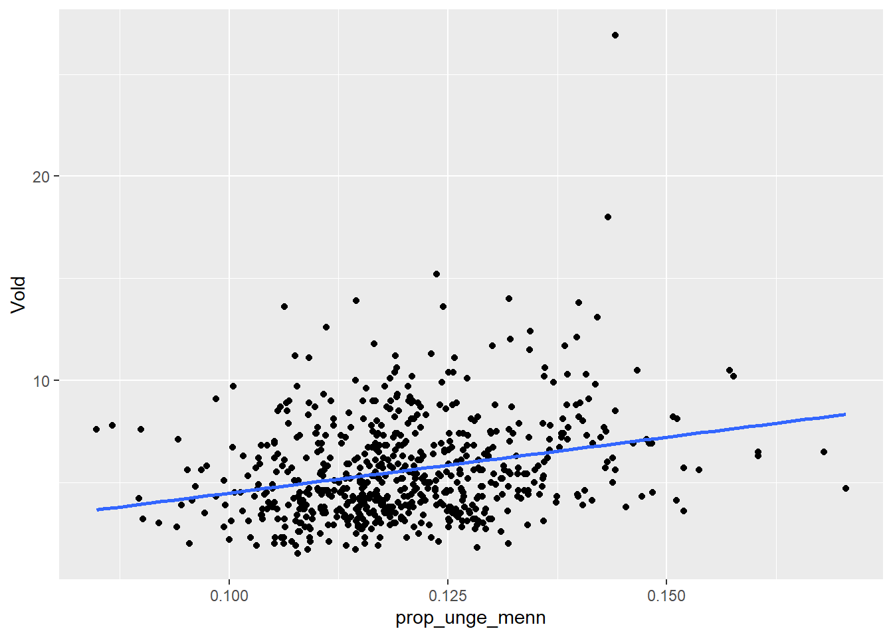
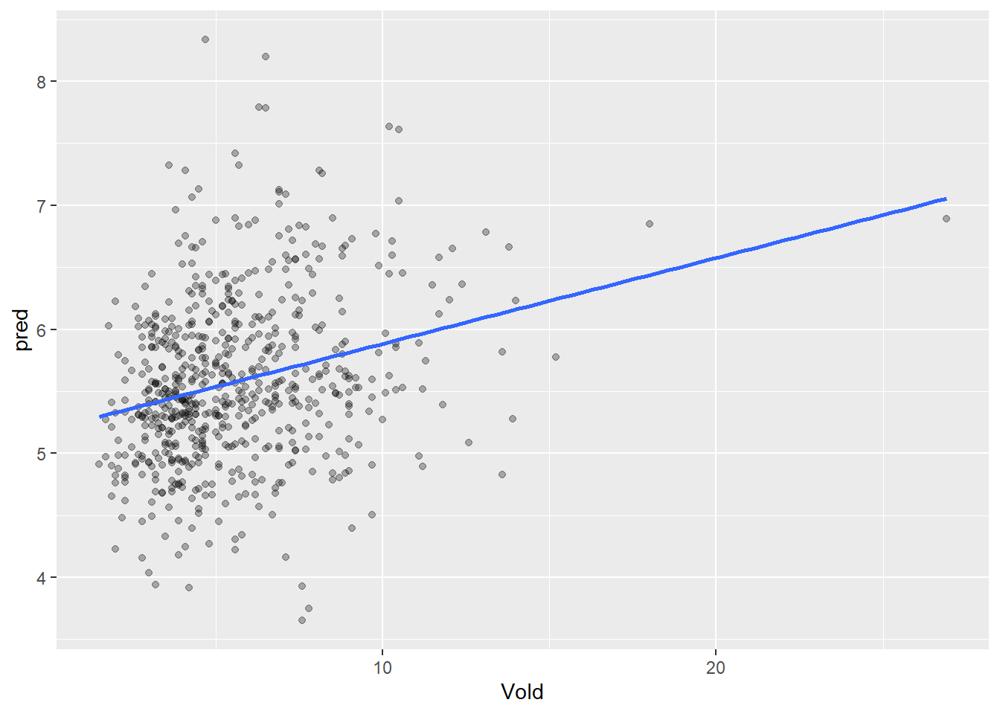
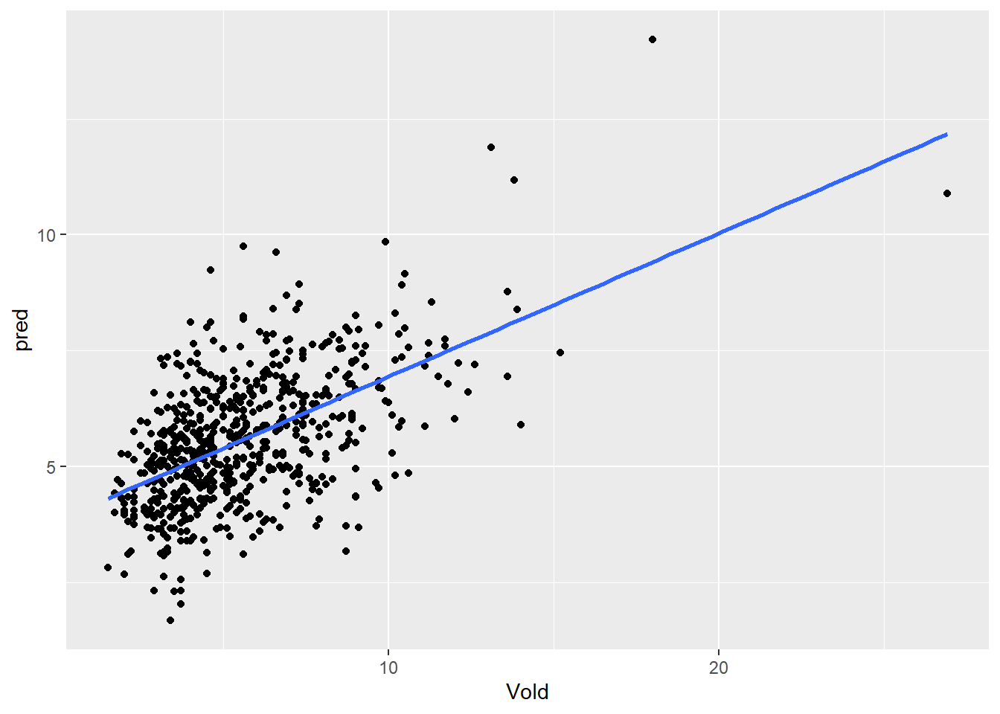
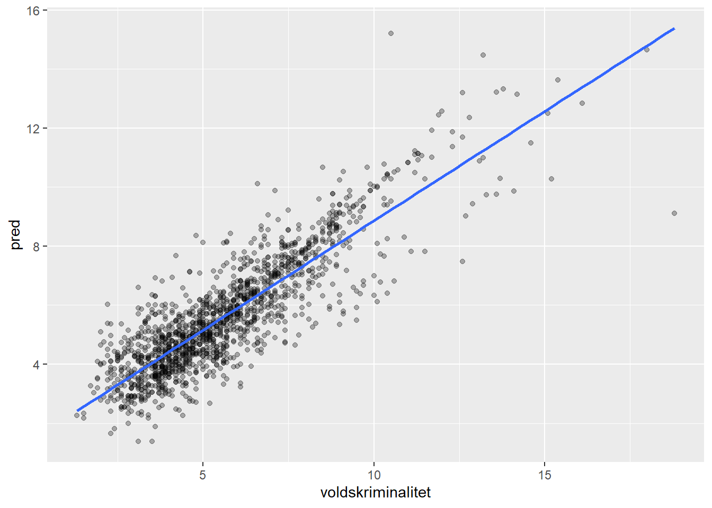

3 Lineær regresjon
3.1 OLS i R
Vi illustrerer lineær regresjon med et empirisk eksempel. Her skal vi bruke data for norske kommuner i 2016. La oss si at vi er interessert i hvordan antall voldshendelser per 1000 innbyggere vil endre seg i en kommune. Dette kunne være relevant for langtidsplanlegging av forebygging, politibemanning, helsetjenester osv. Det kan være et område som er i stor endring slik at befolkningssammensetningen forventes å endre seg og/eller det er endrede lokale økonomiske utsikter.
Først leser vi inn dataene og tar en titt på variabellisten.
Code
kommune <- readRDS( "data/kommunedata.rds")
glimpse(kommune)Rows: 1,529
Columns: 28
$ kommune_nr <chr> "0101", "0101", "0101", "0101", "0104", "0104",…
$ kommune <chr> "Halden (-2019)", "Halden (-2019)", "Halden (-2…
$ year <dbl> 2015, 2016, 2017, 2018, 2015, 2016, 2017, 2018,…
$ bef_18min <int> 3556, 3503, 3505, 3544, 3594, 3652, 3704, 3655,…
$ bef_18_25 <int> 3575, 3585, 3432, 3438, 3405, 3404, 3355, 3370,…
$ bef_26_35 <int> 3728, 3804, 3985, 4035, 4057, 4071, 4124, 4110,…
$ bef_totalt <int> 30328, 30544, 30790, 31037, 31802, 32182, 32407…
$ menn_18_25 <int> 1847, 1865, 1813, 1819, 1789, 1802, 1789, 1810,…
$ menn_26_35 <int> 1880, 1919, 2005, 2062, 2063, 2083, 2113, 2134,…
$ menn_36_67 <int> 7067, 7051, 7085, 7057, 7418, 7453, 7408, 7407,…
$ menn_67plus <int> 2496, 2624, 2697, 2806, 2671, 2777, 2856, 2895,…
$ menn_18min <int> 1880, 1847, 1873, 1876, 1842, 1885, 1919, 1878,…
$ kvinner_18_25 <int> 1728, 1720, 1619, 1619, 1616, 1602, 1566, 1560,…
$ kvinner_26_35 <int> 1848, 1885, 1980, 1973, 1994, 1988, 2011, 1976,…
$ kvinner_36_67 <int> 6880, 6832, 6844, 6848, 7479, 7519, 7537, 7596,…
$ kvinner_67plus <int> 3026, 3145, 3242, 3309, 3178, 3306, 3423, 3555,…
$ kvinner_18min <int> 1676, 1656, 1632, 1668, 1752, 1767, 1785, 1777,…
$ inntekt_totalt_median <int> 555000, 562000, 580000, 591000, 561000, 568000,…
$ inntekt_eskatt_median <int> 451000, 453000, 470000, 480000, 449000, 456000,…
$ ant_husholdninger <int> 13890, 14124, 14281, 14454, 15046, 15132, 15313…
$ shj_klienter <int> 1183, 1137, 1099, 1128, 1155, 1129, 1152, 1137,…
$ shj_unge <int> 262, 247, 248, 242, 267, 263, 238, 222, 307, 28…
$ vinningskriminalitet <dbl> 19.7, 18.7, 16.5, 14.5, 24.5, 21.5, 18.0, 18.0,…
$ voldskriminalitet <dbl> 11.2, 12.6, 12.3, 11.2, 7.8, 8.3, 8.7, 9.7, 6.8…
$ nark_alko_kriminalitet <dbl> 21.0, 21.9, 21.0, 20.3, 12.0, 10.2, 10.9, 10.1,…
$ ordenslovbrudd <dbl> 18.5, 16.5, 14.9, 13.7, 8.9, 9.0, 9.1, 9.2, 8.2…
$ trafikklovbrudd <dbl> 15.5, 16.3, 16.7, 19.2, 7.4, 6.3, 6.9, 8.0, 9.6…
$ andre_lovbrudd <dbl> 25.5, 26.5, 26.1, 25.2, 12.1, 12.2, 11.9, 12.4,…En annen måte å få oversikt over dataene på er å bruke funksjonen skim(), som gir noe mer informasjon om fordelingen av hver enkelt variabel.
Code
skim(kommune)| Name | kommune |
| Number of rows | 1529 |
| Number of columns | 28 |
| _______________________ | |
| Column type frequency: | |
| character | 2 |
| numeric | 26 |
| ________________________ | |
| Group variables | None |
Variable type: character
| skim_variable | n_missing | complete_rate | min | max | empty | n_unique | whitespace |
|---|---|---|---|---|---|---|---|
| kommune_nr | 0 | 1 | 4 | 4 | 0 | 561 | 0 |
| kommune | 0 | 1 | 2 | 46 | 0 | 561 | 0 |
Variable type: numeric
| skim_variable | n_missing | complete_rate | mean | sd | p0 | p25 | p50 | p75 | p100 | hist |
|---|---|---|---|---|---|---|---|---|---|---|
| year | 0 | 1 | 2017.17 | 1.70 | 2015.0 | 2016.0 | 2017.0 | 2018.0 | 2020.0 | ▇▃▃▁▃ |
| bef_18min | 0 | 1 | 2051.72 | 5134.84 | 82.0 | 478.0 | 843.0 | 1912.0 | 71566.0 | ▇▁▁▁▁ |
| bef_18_25 | 0 | 1 | 2010.07 | 5876.07 | 90.0 | 423.0 | 772.0 | 1723.0 | 80730.0 | ▇▁▁▁▁ |
| bef_26_35 | 0 | 1 | 2637.60 | 10179.34 | 80.0 | 466.0 | 873.0 | 2013.0 | 156988.0 | ▇▁▁▁▁ |
| bef_totalt | 0 | 1 | 17351.92 | 48195.14 | 934.0 | 4062.0 | 6952.0 | 15656.0 | 693494.0 | ▇▁▁▁▁ |
| menn_18_25 | 0 | 1 | 1033.97 | 2872.20 | 45.0 | 224.0 | 404.0 | 904.0 | 38847.0 | ▇▁▁▁▁ |
| menn_26_35 | 0 | 1 | 1348.18 | 5122.76 | 44.0 | 240.0 | 456.0 | 1017.0 | 78059.0 | ▇▁▁▁▁ |
| menn_36_67 | 0 | 1 | 3940.48 | 10521.30 | 234.0 | 939.0 | 1630.0 | 3650.0 | 150390.0 | ▇▁▁▁▁ |
| menn_67plus | 0 | 1 | 1361.18 | 3039.57 | 56.0 | 383.0 | 639.0 | 1330.0 | 42590.0 | ▇▁▁▁▁ |
| menn_18min | 0 | 1 | 1050.44 | 2618.78 | 44.0 | 244.0 | 434.0 | 974.0 | 36298.0 | ▇▁▁▁▁ |
| kvinner_18_25 | 0 | 1 | 976.11 | 3006.75 | 38.0 | 201.0 | 365.0 | 813.0 | 41945.0 | ▇▁▁▁▁ |
| kvinner_26_35 | 0 | 1 | 1289.42 | 5058.28 | 35.0 | 224.0 | 420.0 | 989.0 | 78929.0 | ▇▁▁▁▁ |
| kvinner_36_67 | 0 | 1 | 3770.34 | 9932.02 | 200.0 | 862.0 | 1561.0 | 3487.0 | 140473.0 | ▇▁▁▁▁ |
| kvinner_67plus | 0 | 1 | 1580.52 | 3696.66 | 64.0 | 428.0 | 729.0 | 1488.0 | 50757.0 | ▇▁▁▁▁ |
| kvinner_18min | 0 | 1 | 1001.28 | 2516.27 | 38.0 | 232.0 | 405.0 | 933.0 | 35268.0 | ▇▁▁▁▁ |
| inntekt_totalt_median | 0 | 1 | 654721.39 | 75785.29 | 463000.0 | 601000.0 | 646000.0 | 697000.0 | 898000.0 | ▁▇▇▃▁ |
| inntekt_eskatt_median | 0 | 1 | 519417.92 | 52786.68 | 376000.0 | 482000.0 | 514000.0 | 550000.0 | 675000.0 | ▁▆▇▃▁ |
| ant_husholdninger | 0 | 1 | 7873.76 | 23631.34 | 426.0 | 1831.0 | 3137.0 | 6896.0 | 348864.0 | ▇▁▁▁▁ |
| shj_klienter | 0 | 1 | 449.81 | 1383.19 | 11.0 | 98.0 | 179.0 | 376.0 | 20401.0 | ▇▁▁▁▁ |
| shj_unge | 0 | 1 | 89.36 | 197.02 | 0.0 | 20.0 | 39.0 | 89.0 | 2488.0 | ▇▁▁▁▁ |
| vinningskriminalitet | 0 | 1 | 9.19 | 7.05 | 1.5 | 4.8 | 7.2 | 11.5 | 91.2 | ▇▁▁▁▁ |
| voldskriminalitet | 0 | 1 | 5.61 | 2.28 | 1.3 | 3.9 | 5.2 | 6.8 | 18.8 | ▇▇▂▁▁ |
| nark_alko_kriminalitet | 0 | 1 | 6.91 | 4.60 | 1.1 | 3.9 | 5.9 | 8.9 | 55.5 | ▇▁▁▁▁ |
| ordenslovbrudd | 0 | 1 | 4.91 | 3.23 | 1.1 | 3.0 | 4.1 | 5.9 | 34.9 | ▇▁▁▁▁ |
| trafikklovbrudd | 0 | 1 | 10.49 | 11.36 | 2.1 | 6.0 | 8.1 | 11.7 | 219.7 | ▇▁▁▁▁ |
| andre_lovbrudd | 0 | 1 | 9.59 | 4.34 | 2.3 | 7.1 | 8.8 | 10.8 | 52.5 | ▇▁▁▁▁ |
3.1.1 Enkel lineær regresjon
En ganske åpenbar faktor som forklarer forekomsten av vold er andel unge menn i kommunen. Rett og slett fordi dette er den demografiske gruppen som begår mest vold - og kriminalitet generelt, faktisk. Hvis befolkningssammensetningen forventes å bli yngre vil det medføre flere unge menn, og da kan vi kanskje forvente at det blir flere voldshendelser bare av den grunn? Sammenhengen mellom unge menn og voldsrate kan estimeres med helt vanlig lineær regresjon.
En god start på de fleste empiriske analyser er å beskrive sammenhengen med et plot. Her legger vi på en lineær regresjonslinje med geom_smooth() der vi presiserer lineær modell med method = "lm" og lar være å ta med konfidensintervallet se = FALSE.
Code
kommune <- kommune %>%
mutate(prop_unge_menn = (menn_18_25 + menn_26_35)/bef_totalt*100)
ggplot(kommune, aes(x = prop_unge_menn,
y = voldskriminalitet)) +
geom_point() +
geom_smooth(method = "lm", se = FALSE) 
Code
est <- lm(voldskriminalitet ~ prop_unge_menn, data=kommune)
summary(est)
Call:
lm(formula = voldskriminalitet ~ prop_unge_menn, data = kommune)
Residuals:
Min 1Q Median 3Q Max
-4.0090 -1.5596 -0.3907 1.1731 13.2217
Coefficients:
Estimate Std. Error t value Pr(>|t|)
(Intercept) 0.7111 0.5132 1.386 0.166
prop_unge_menn 0.3960 0.0412 9.611 <2e-16 ***
---
Signif. codes: 0 '***' 0.001 '**' 0.01 '*' 0.05 '.' 0.1 ' ' 1
Residual standard error: 2.218 on 1527 degrees of freedom
Multiple R-squared: 0.05704, Adjusted R-squared: 0.05642
F-statistic: 92.37 on 1 and 1527 DF, p-value: < 2.2e-16Code
round(summary(est)$r.squared, digits = 3)[1] 0.057Med andre ord kan voldsraten beskrives som
\[ voldskriminalitet = 0.78 + 0.39 \times ungeMenn \] Men vi har også sett at \(r^2\) er ganske lav, bare 0.057. Denne koeffisienten kalles også “coefficient of determination” og sier noe om i hvor stor grad modellen fanger opp variasjoenen i dataene. En lav \(r^2\) betyr at modellen i liten grad gjør det. Vi må altså forvente at modellen vil bomme ganske kraftig i sine prediksjoner. Vi kan velge å ta modellen seriøst likevel, men ikke ha for store forventninger for prediksjonene!
Et annet mål på hvor godt modellen treffer er “Root mean square error”, RMSE. Dette kan skrives som:
\[ rmse = \sqrt{ \frac{ \sum{(O_i-P_i)^2} }{N} } \]
der \(O\) er de observerte verdiene og \(P\) er de predikerte verdiene for observasjon \(i\). Merk at \((O_i-P_i)\) er residualene. I R kan vi hente ut residualene fra regresjons-objektet med dollartegnet ...$res etter objektnavnet. Da kan du regne ut RMSE som følger:
Code
rmse <- sqrt(mean(est$res^2))
rmse[1] 2.216635RMSE sier altså omtrentlig hvor mye modellen i gjennomsnitt bommer på de observerte verdiene. 1. Hvorvidt det er presist nok eller ikke vil vel strengt tatt komme an på behovet for presisjon, altså: hva man skal bruke det til.
For å få litt bedre tak på hva RMSE betyr kan vi se på et plot av de predikerte og observerte verdiene. Vi kan predikere vold for hver enkelt kommune basert på denne modellen, som altså er den forventede voldsraten hvis modellen er sann. Funksjonen predict() gir oss hva vi trenger.
Code
kom <- kommune %>%
mutate(pred = predict(est))Merk at koden her lagde en kopi av datasettet der vi har alle de opprinnelige variablene pluss en variabel med de predikerte verdiene. Vi kan nå sammenlignet prediksjonene med de observerte utfallene.
Code
ggplot(kom, aes(x = voldskriminalitet, y = pred)) +
geom_point(alpha = .3) +
geom_smooth(method = "lm", se = FALSE)`geom_smooth()` using formula = 'y ~ x'
Hvis prediksjonen hadde vært perfekt ville disse punktene ligget på linja, noe den jo ikke gjør. Modellen bommer altså ganske mye.
Hva hvis vi vil vite forventet voldsrate for en kommune for en gitt andel unge menn? Løsningen er å lage et nytt datasett med de verdiene vi er interessert i og så predikere for dette datasettet med å spesifisere newdata = dt. Her er et eksempel der vi ønsker å vite voldsraten hvis andelen unge menn er 15%.
Code
dt <- data.frame(prop_unge_menn = .15)
predict(est, newdata = dt) 1
0.7704947 I følge modellen vil altså en kommune der 15% av populasjonen er unge menn ha en 7.2 voldshendelser per 1000 innbyggere. Fra tradisjonell statistikk vet vi jo at det er usikkerhet knyttet til dette estimatet og vi kan også ta det med i beregningen her. Vanligvis vil man estimere med et konfidensintervall, som gjelder hvis man estimerer et gjennomsnitt i en gruppe. Her skal vi derimot predikere for en enkelt kommune, som da har større usikkerhet enn om man estimerer for en enkelt observasjon. Dette kalles prediksjonsintervall og må spesifiseres i koden. Hvis det ikke er gitt vil R gi konfidensintervallet.
Code
predict(est, newdata = dt, interval = "prediction") fit lwr upr
1 0.7704947 -3.69255 5.233539Tolkningen er ellers tilsvarende som for konfidensintervall: vi forventer med “95% sannsynlighet”2 at voldsraten vil være mellom 2.3 og 12.1 per 1000 innbyggere.
3.1.2 Multippel regresjon
Enkel regresjon er nettopp enkel og prediksjonen blir ikke så god. Men vi kan komplisere vesentlig ved å inkludere flere variable og bruke alle triksene man evt. har lært om multippel regresjon tidligere, primært interaksjonsledd, polynomer og transformasjoner osv.
I R vil vi da bare legge til flere variabelnavn i formelen. Ellers er det meste likt som for enkel lineær regresjon.
Code
est_m <- lm(voldskriminalitet ~ prop_unge_menn + inntekt_totalt_median + shj_unge +
ant_husholdninger ,
data=kommune)
summary(est_m)
Call:
lm(formula = voldskriminalitet ~ prop_unge_menn + inntekt_totalt_median +
shj_unge + ant_husholdninger, data = kommune)
Residuals:
Min 1Q Median 3Q Max
-4.9961 -1.3096 -0.2122 0.9915 12.5508
Coefficients:
Estimate Std. Error t value Pr(>|t|)
(Intercept) 7.833e+00 5.921e-01 13.230 < 2e-16 ***
prop_unge_menn 3.952e-01 4.217e-02 9.372 < 2e-16 ***
inntekt_totalt_median -1.126e-05 6.984e-07 -16.117 < 2e-16 ***
shj_unge 5.121e-03 8.695e-04 5.890 4.75e-09 ***
ant_husholdninger -2.544e-05 7.048e-06 -3.610 0.000316 ***
---
Signif. codes: 0 '***' 0.001 '**' 0.01 '*' 0.05 '.' 0.1 ' ' 1
Residual standard error: 1.989 on 1524 degrees of freedom
Multiple R-squared: 0.2434, Adjusted R-squared: 0.2414
F-statistic: 122.6 on 4 and 1524 DF, p-value: < 2.2e-16Merk at \(r^2\) nå har gått betraktelig opp, til ca 0.24. Gitt at vi tolker dette som i hvor stor grad vi kan predikere utfallet fra datasettet, så er det kanskje likevel ikke imponerende høyt: vi vil fremdeles forvente mye feil prediksjon.
Her er et scatterplot av observert mot forventet voldsrater:
Code
kom_pred <- kommune %>%
mutate(pred = predict(est_m))
ggplot(kom_pred, aes(x = voldskriminalitet, y = pred)) +
geom_point() +
geom_smooth(method = "lm", se = FALSE)
La oss inkludere alle aktuelle variable i datasettet. Et lite triks her er å fjerne alle variable vi ikke er interessert i og lagre det i et nytt datasett. I lm() kan vi da presisere formelen som Vold ~ . som betyr å ta med alle variabelene i stedet for å liste hver enkelt variabel.
Code
glimpse(kommune)Rows: 1,529
Columns: 29
$ kommune_nr <chr> "0101", "0101", "0101", "0101", "0104", "0104",…
$ kommune <chr> "Halden (-2019)", "Halden (-2019)", "Halden (-2…
$ year <dbl> 2015, 2016, 2017, 2018, 2015, 2016, 2017, 2018,…
$ bef_18min <int> 3556, 3503, 3505, 3544, 3594, 3652, 3704, 3655,…
$ bef_18_25 <int> 3575, 3585, 3432, 3438, 3405, 3404, 3355, 3370,…
$ bef_26_35 <int> 3728, 3804, 3985, 4035, 4057, 4071, 4124, 4110,…
$ bef_totalt <int> 30328, 30544, 30790, 31037, 31802, 32182, 32407…
$ menn_18_25 <int> 1847, 1865, 1813, 1819, 1789, 1802, 1789, 1810,…
$ menn_26_35 <int> 1880, 1919, 2005, 2062, 2063, 2083, 2113, 2134,…
$ menn_36_67 <int> 7067, 7051, 7085, 7057, 7418, 7453, 7408, 7407,…
$ menn_67plus <int> 2496, 2624, 2697, 2806, 2671, 2777, 2856, 2895,…
$ menn_18min <int> 1880, 1847, 1873, 1876, 1842, 1885, 1919, 1878,…
$ kvinner_18_25 <int> 1728, 1720, 1619, 1619, 1616, 1602, 1566, 1560,…
$ kvinner_26_35 <int> 1848, 1885, 1980, 1973, 1994, 1988, 2011, 1976,…
$ kvinner_36_67 <int> 6880, 6832, 6844, 6848, 7479, 7519, 7537, 7596,…
$ kvinner_67plus <int> 3026, 3145, 3242, 3309, 3178, 3306, 3423, 3555,…
$ kvinner_18min <int> 1676, 1656, 1632, 1668, 1752, 1767, 1785, 1777,…
$ inntekt_totalt_median <int> 555000, 562000, 580000, 591000, 561000, 568000,…
$ inntekt_eskatt_median <int> 451000, 453000, 470000, 480000, 449000, 456000,…
$ ant_husholdninger <int> 13890, 14124, 14281, 14454, 15046, 15132, 15313…
$ shj_klienter <int> 1183, 1137, 1099, 1128, 1155, 1129, 1152, 1137,…
$ shj_unge <int> 262, 247, 248, 242, 267, 263, 238, 222, 307, 28…
$ vinningskriminalitet <dbl> 19.7, 18.7, 16.5, 14.5, 24.5, 21.5, 18.0, 18.0,…
$ voldskriminalitet <dbl> 11.2, 12.6, 12.3, 11.2, 7.8, 8.3, 8.7, 9.7, 6.8…
$ nark_alko_kriminalitet <dbl> 21.0, 21.9, 21.0, 20.3, 12.0, 10.2, 10.9, 10.1,…
$ ordenslovbrudd <dbl> 18.5, 16.5, 14.9, 13.7, 8.9, 9.0, 9.1, 9.2, 8.2…
$ trafikklovbrudd <dbl> 15.5, 16.3, 16.7, 19.2, 7.4, 6.3, 6.9, 8.0, 9.6…
$ andre_lovbrudd <dbl> 25.5, 26.5, 26.1, 25.2, 12.1, 12.2, 11.9, 12.4,…
$ prop_unge_menn <dbl> 12.288974, 12.388685, 12.400130, 12.504430, 12.…Code
kom_s <- kommune %>%
select(-c(kommune, kommune_nr, ordenslovbrudd,
nark_alko_kriminalitet, trafikklovbrudd, andre_lovbrudd,
prop_unge_menn))
full_mod <- lm(voldskriminalitet ~ . , data = kom_s)
summary(full_mod)
Call:
lm(formula = voldskriminalitet ~ ., data = kom_s)
Residuals:
Min 1Q Median 3Q Max
-4.0329 -1.1999 -0.1808 0.9097 12.8358
Coefficients: (4 not defined because of singularities)
Estimate Std. Error t value Pr(>|t|)
(Intercept) -2.003e+02 7.719e+01 -2.594 0.009569 **
year 1.033e-01 3.852e-02 2.683 0.007377 **
bef_18min 2.302e-03 1.418e-03 1.623 0.104782
bef_18_25 5.924e-04 1.241e-03 0.477 0.633319
bef_26_35 1.088e-03 8.485e-04 1.282 0.199869
bef_totalt -2.417e-03 5.978e-04 -4.043 5.55e-05 ***
menn_18_25 3.005e-03 1.698e-03 1.769 0.077053 .
menn_26_35 -9.251e-04 1.653e-03 -0.560 0.575800
menn_36_67 2.790e-03 7.901e-04 3.531 0.000426 ***
menn_67plus 2.002e-03 1.136e-03 1.762 0.078336 .
menn_18min 4.540e-03 2.244e-03 2.024 0.043192 *
kvinner_18_25 NA NA NA NA
kvinner_26_35 NA NA NA NA
kvinner_36_67 2.157e-04 7.319e-04 0.295 0.768293
kvinner_67plus NA NA NA NA
kvinner_18min NA NA NA NA
inntekt_totalt_median -3.373e-05 6.270e-06 -5.380 8.63e-08 ***
inntekt_eskatt_median 3.503e-05 9.117e-06 3.843 0.000127 ***
ant_husholdninger 1.408e-03 2.409e-04 5.843 6.26e-09 ***
shj_klienter 3.034e-03 8.211e-04 3.695 0.000228 ***
shj_unge -5.785e-04 2.554e-03 -0.227 0.820824
vinningskriminalitet 9.874e-02 8.820e-03 11.195 < 2e-16 ***
---
Signif. codes: 0 '***' 0.001 '**' 0.01 '*' 0.05 '.' 0.1 ' ' 1
Residual standard error: 1.86 on 1511 degrees of freedom
Multiple R-squared: 0.3442, Adjusted R-squared: 0.3368
F-statistic: 46.65 on 17 and 1511 DF, p-value: < 2.2e-16\(r^2\) gikk noe opp, til 0.39.
Men vi kan gjøre modellen ekstra komplisert ved inkludere alle mulige interaksjonsledd. En åpenbar ulempe med dette er at hver enkelt koeffisent blir svært mye vanskeligere å tolke. Vi fokuserer derfor kun på \(r^2\) som kan hentes ut uten å ta med resten av output.
Code
full_mod2 <- lm( voldskriminalitet ~ .^2, data = kom_s)
summary(full_mod2)$r.squared[1] 0.5059232\(r^2\) gikk vesentlig opp. Men når vi først driver med kompliserte modellspesifikasjoner som uansett er vanskelige å tolke - hvorfor begrense seg til 2-veis interaksjoner? Her er en versjon med alle 3-veis interaksjoner, og nå begynner \(r^2\) virkelig å bli høy!
Code
full_mod3 <- lm( voldskriminalitet ~ .^3, data = kom_s)
summary(full_mod3)$r.squared[1] 0.7431978Vi kan trimme modellen så den ikke har med så voldsomt mange parametre. En mulighet er å overlate dette til datamaskinen ved å la den gjøre en trinnvis test av hvorvidt modellene blir signifikant bedre av å legge til hver av de parametrene, og stopper når modellen ikke blir bedre. Så beholdes den “beste” av disse modellene, ikke nødvendigvis den som er mest komplisert.
OBS! Merk at dette er en rent mekanisk seleksjon, og frarådes i de fleste samfunnsvitenskapelige sammenhenger. Tolkning av parametre og statistisk usikkerhet er nå på svært tynn is. Men det kan gi god prediksjon likevel.
Code
step_mod <- MASS::stepAIC(full_mod3, direction="forward",
trace = FALSE)
summary(step_mod)$r.squared[1] 0.7431978Hvis vi nå predikerer for hver enkelt kommune og plotter forventet mot observert, så får vi et svært mye bedre sammenfall enn tidligere.
Code
kom_pred <- kom_s %>%
mutate(pred = predict(step_mod))
ggplot(kom_pred, aes(x = voldskriminalitet, y = pred)) +
geom_point(alpha = .3) +
geom_smooth(method = "lm", se = FALSE)
Nå kan vi også regne ut RMSE, som altså er “root mean squared error”. Med andre ord: regn ut residualene (dvs. “error”), og kvadrer denne, og så ta kvadratroten av gjennomsnittet av denne. Her er en kode skrevet litt omstendelig så den er litt lettere å forstå:
Code
kom_s %>%
mutate(pred = predict(step_mod),
residual = pred - voldskriminalitet) %>%
mutate(sq.resid = residual^2) %>%
summarise(sqrt(mean(sq.resid))) sqrt(mean(sq.resid))
1 1.157035Dette betyr omtrentlig at modellen i gjennomsnitt vil bomme med 1.38 prosentpoeng på voldsraten i kommunen. 3. Hvorvidt det er presist nok eller ikke vil vel strengt tatt komme an på behovet for presisjon, altså: hva man skal bruke det til.
3.2 Oppgaver
Exercise 3.1 Velg et datasettet og formuler hva en prediksjonsmodell kan kunne brukes til. Se for deg at tiltak du foreslår vil altså ha faktiske konsekvenser, så gjør en vurdering av hvorvidt feilprediksjoner vil være problematiske og i så fall på hvilken måte. Vurder mulighetene for feil opp mot gevinst ved riktig prediksjon.
Merk: det er ikke viktig at anvendelsen skal være realistisk, men du må alltid ta konsekvensen i vurderingene.
Exercise 3.2 Last inn valgte datasett og splitt i et training og et testing datasett. Sett splitten ved .70. Bruk training-data til å gjøre deg kjent med dataene og estimere modellene. Ikke bruk testing-dataene inntil du får beskjed om det.
Exercise 3.3 Gjør deg kjent med innholdet i disse training-dataene. Du kan gjøre f.eks. følgende:
- Bruk
glimpse()ogskim()til å få oversikt over innholdet i datasettet - Hvis det er noen variable du ikke kommer til å bruke, slett gjerne disse med en gang
- Lag noen tabeller og plot som viser hvordan utfallsvariabelen er fordelt etter andre variable
Exercise 3.4 Estimer flere lineær regresjonsmodeller med et fåtall prediktorer. Gjør et utvalg av de variablene du mener er mest relevant for å forklare utfallet. Estimer flere lineære regresjonsmodeller for å predikere utfallet, og sammenlign hvor gode prediksjoner disse gir. Mest relevante statistikker er \(r^2\) og RMSE.
- Velg ut tre forklaringsvariable og estimer en regresjonsmodell
- Estimer en ny modell med alle variable i datasettet
- Estimer en ny modell og inkluder noen få polynomer og/eller interaksjonsledd
- Gjør et automatisk modellsøk
Lag gjerne noen plot av ROC-curve for i hvert fall noen av modellene slik at du får en følelse med hva AUC egentlig betyr. Plot også predikert verdi mot observert verdi og gjør en vurdering av RMSE.
Exercise 3.5 I forrige oppgave brukte du testing-datasettet til både å estimere modellene og vurdere resultatet. Nå skal du bruke testing-datasettet til å vurdere de samme resultatene. Dette gjør du ved å predikere på testing-datasettet og regne ut AUC og RMSE for disse dataene. For hver modell i forrige oppgave, gjør som følger:
- Prediker utfallet på testing-datasettet
- Regn ut AUC og RMSE
- Hvor stor er endringen i AUC og RMSE fra resultatene når du brukte training-datasettet?
Vurdering: En mer komplisert modell beskriver dataene bedre. Men er det like stor endring i AUC og RMSE for enkle og mer kompliserte modeller? Beskriv hva du ser og gi en forklaring.
Denne formuleringen er ganske omtrentlig. RMSE er egentlig kvadratroten av gjennomsnittet til de kvadrerte residualene, som er noe litt annet enn gjennomsnittet av de absolutte verdiene av residualene. Det gir bl.a. litt mer vekt til store residualer enn et vanlig gjennomsnitt↩︎
Dette er en omtrentelig formulering. Alle sannsynligheter gjelder i det lange løp: altså hvis man gjør undersøkelsen veldig mange ganger.↩︎
Denne formuleringen er ganske omtrentlig. RMSE er egentlig kvadratroten av gjennomsnittet til de kvadrerte residualene, som er noe litt annet enn gjennomsnittet av de absolutte verdiene av residualene. Det gir bl.a. litt mer vekt til store residualer enn et vanlig gjennomsnitt↩︎